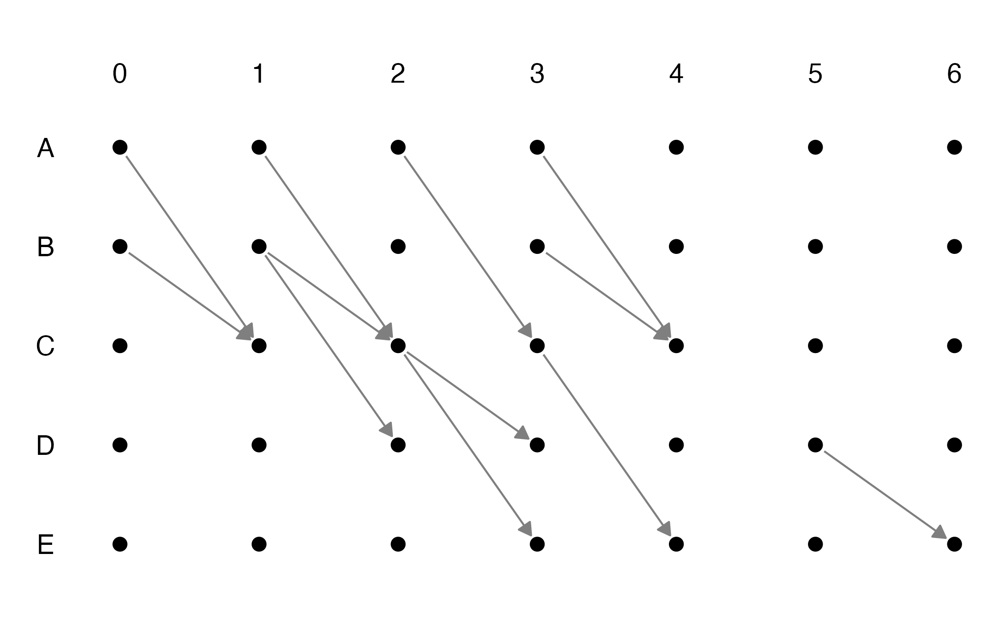
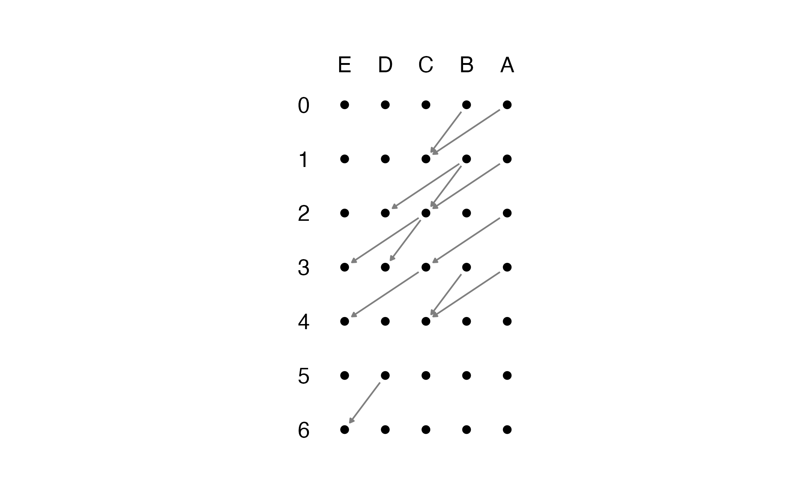

time_unfolded_graphs.Rmdlibrary(dplyr) #> #> Attaching package: 'dplyr' #> The following objects are masked from 'package:stats': #> #> filter, lag #> The following objects are masked from 'package:base': #> #> intersect, setdiff, setequal, union library(adjHelpR) library(ggraph) #> Loading required package: ggplot2
The first step is to load a time-stamped edge list from which to generate the time-unfolded graph. Let’s start from a small synthetic example.
el <- tibble( ts = c( 1, 1, 2, 2, 2, 3, 3, 3, 4, 4, 4, 6), from = c('A','B', 'A','B','B', 'A','C','C', 'A','B','C', 'D'), to = c('C','C', 'C','C','D', 'C','D','E', 'C','C','E', 'E') ) el #> # A tibble: 12 x 3 #> ts from to #> <dbl> <chr> <chr> #> 1 1 A C #> 2 1 B C #> 3 2 A C #> 4 2 B C #> 5 2 B D #> 6 3 A C #> 7 3 C D #> 8 3 C E #> 9 4 A C #> 10 4 B C #> 11 4 C E #> 12 6 D E
The edge list should contain at least 3 column: the edge source, the edge targets, and the timestamps. If you simply want to plot the time-unfolded graph from this edge list, run simply the get_unfolded_plot function. The function takes as option the direction in which you the graph to unfold. Set vertical to TRUE for a vertical plot, and to FALSE otherwise.
get_unfolded_plot(edge.list = el, select_cols = c(2:3,1), resize_ratio = 1.4, enlarge_ratio = .8) #> Warning: Removed 28 rows containing missing values (geom_text). #> Warning: Removed 30 rows containing missing values (geom_text).

Note that we had to set the option select_cols. The function assumes that your edge.list takes the form (‘source’, ‘target’,‘timestamps’). Since the edge list we have passed has a different order, we pass to the function the positions of these 3 columns, i.e., 2,3,1, because the first one contains the timetamps.
Often, we are not satisfied with the default plot, or we are interested in the time-unfolded adjacency matrix to perform further operations. If our aim is the latter, we can use the function get_unfolded_adjacency.
get_unfolded_adjacency(edge.list = el, select_cols = c(2:3,1), vertical = FALSE, sparse = TRUE) #> 35 x 35 sparse Matrix of class "dgCMatrix" #> [[ suppressing 35 column names 'A_0', 'A_1', 'A_2' ... ]] #> #> A_0 . . . . . . . . . . . . . . . 1 . . . . . . . . . . . . . . . . . . . #> A_1 . . . . . . . . . . . . . . . . 1 . . . . . . . . . . . . . . . . . . #> A_2 . . . . . . . . . . . . . . . . . 1 . . . . . . . . . . . . . . . . . #> A_3 . . . . . . . . . . . . . . . . . . 1 . . . . . . . . . . . . . . . . #> A_4 . . . . . . . . . . . . . . . . . . . . . . . . . . . . . . . . . . . #> A_5 . . . . . . . . . . . . . . . . . . . . . . . . . . . . . . . . . . . #> A_6 . . . . . . . . . . . . . . . . . . . . . . . . . . . . . . . . . . . #> B_0 . . . . . . . . . . . . . . . 1 . . . . . . . . . . . . . . . . . . . #> B_1 . . . . . . . . . . . . . . . . 1 . . . . . . 1 . . . . . . . . . . . #> B_2 . . . . . . . . . . . . . . . . . . . . . . . . . . . . . . . . . . . #> B_3 . . . . . . . . . . . . . . . . . . 1 . . . . . . . . . . . . . . . . #> B_4 . . . . . . . . . . . . . . . . . . . . . . . . . . . . . . . . . . . #> B_5 . . . . . . . . . . . . . . . . . . . . . . . . . . . . . . . . . . . #> B_6 . . . . . . . . . . . . . . . . . . . . . . . . . . . . . . . . . . . #> C_0 . . . . . . . . . . . . . . . . . . . . . . . . . . . . . . . . . . . #> C_1 . . . . . . . . . . . . . . . . . . . . . . . . . . . . . . . . . . . #> C_2 . . . . . . . . . . . . . . . . . . . . . . . . 1 . . . . . . 1 . . . #> C_3 . . . . . . . . . . . . . . . . . . . . . . . . . . . . . . . . 1 . . #> C_4 . . . . . . . . . . . . . . . . . . . . . . . . . . . . . . . . . . . #> C_5 . . . . . . . . . . . . . . . . . . . . . . . . . . . . . . . . . . . #> C_6 . . . . . . . . . . . . . . . . . . . . . . . . . . . . . . . . . . . #> D_0 . . . . . . . . . . . . . . . . . . . . . . . . . . . . . . . . . . . #> D_1 . . . . . . . . . . . . . . . . . . . . . . . . . . . . . . . . . . . #> D_2 . . . . . . . . . . . . . . . . . . . . . . . . . . . . . . . . . . . #> D_3 . . . . . . . . . . . . . . . . . . . . . . . . . . . . . . . . . . . #> D_4 . . . . . . . . . . . . . . . . . . . . . . . . . . . . . . . . . . . #> D_5 . . . . . . . . . . . . . . . . . . . . . . . . . . . . . . . . . . 1 #> D_6 . . . . . . . . . . . . . . . . . . . . . . . . . . . . . . . . . . . #> E_0 . . . . . . . . . . . . . . . . . . . . . . . . . . . . . . . . . . . #> E_1 . . . . . . . . . . . . . . . . . . . . . . . . . . . . . . . . . . . #> E_2 . . . . . . . . . . . . . . . . . . . . . . . . . . . . . . . . . . . #> E_3 . . . . . . . . . . . . . . . . . . . . . . . . . . . . . . . . . . . #> E_4 . . . . . . . . . . . . . . . . . . . . . . . . . . . . . . . . . . . #> E_5 . . . . . . . . . . . . . . . . . . . . . . . . . . . . . . . . . . . #> E_6 . . . . . . . . . . . . . . . . . . . . . . . . . . . . . . . . . . .
The function returns a square matrix with \(n\) times \(T\) rows, where \(n\) is the number of nodes in the edge list (or that have been passed to the function via the nodes argument), and \(T\) is the total length of timesteps. An edge at time \(t\) in the edge list, from \(i\) to \(j\), is then translated as an edge from the instance \(i_{t-1}\) of node \(i\), to the instance \(j_t\) of node \(j\).
If we want to plot the time-unfolded graph with full control, we can the use the time-unfolded adjacency matrix constructed as above. However, it is often sufficient to start from a ggraph layout object which assigns the nodes of the matrix on a grid, and then add custom modifications. The function get_unfolded_layout allows to do exactly so.
lyt <- get_unfolded_layout(edge.list = el, select_cols = c(2:3,1), vertical = TRUE) lyt #> x y name .ggraph.orig_index circular .ggraph.index #> 1 0.0 6 A_0 1 FALSE 1 #> 2 0.6 6 B_0 2 FALSE 2 #> 3 1.2 6 C_0 3 FALSE 3 #> 4 1.8 6 D_0 4 FALSE 4 #> 5 2.4 6 E_0 5 FALSE 5 #> 6 0.0 5 A_1 6 FALSE 6 #> 7 0.6 5 B_1 7 FALSE 7 #> 8 1.2 5 C_1 8 FALSE 8 #> 9 1.8 5 D_1 9 FALSE 9 #> 10 2.4 5 E_1 10 FALSE 10 #> 11 0.0 4 A_2 11 FALSE 11 #> 12 0.6 4 B_2 12 FALSE 12 #> 13 1.2 4 C_2 13 FALSE 13 #> 14 1.8 4 D_2 14 FALSE 14 #> 15 2.4 4 E_2 15 FALSE 15 #> 16 0.0 3 A_3 16 FALSE 16 #> 17 0.6 3 B_3 17 FALSE 17 #> 18 1.2 3 C_3 18 FALSE 18 #> 19 1.8 3 D_3 19 FALSE 19 #> 20 2.4 3 E_3 20 FALSE 20 #> 21 0.0 2 A_4 21 FALSE 21 #> 22 0.6 2 B_4 22 FALSE 22 #> 23 1.2 2 C_4 23 FALSE 23 #> 24 1.8 2 D_4 24 FALSE 24 #> 25 2.4 2 E_4 25 FALSE 25 #> 26 0.0 1 A_5 26 FALSE 26 #> 27 0.6 1 B_5 27 FALSE 27 #> 28 1.2 1 C_5 28 FALSE 28 #> 29 1.8 1 D_5 29 FALSE 29 #> 30 2.4 1 E_5 30 FALSE 30 #> 31 0.0 0 A_6 31 FALSE 31 #> 32 0.6 0 B_6 32 FALSE 32 #> 33 1.2 0 C_6 33 FALSE 33 #> 34 1.8 0 D_6 34 FALSE 34 #> 35 2.4 0 E_6 35 FALSE 35
We can then proceed plotting the layout with our chosen specs. By passing the node labels in our preferred order we ensure the correct ordering of the nodes. For example, here we can plot from E to A
# get the nodes' labels from the edge list node.labels <- sort(nodes_from_el(edge.list = el, select_cols = 2:3), decreasing = TRUE) lyt <- get_unfolded_layout(edge.list = el, select_cols = c(2:3,1), vertical = TRUE, nodes = node.labels, resize_ratio = .75, enlarge_ratio = .8) # generate the plot lyt %>% # create the graph ggraph() + # add edges with arrows geom_edge_link(width = grid::unit(0.5, 'mm'), arrow = arrow(length = grid::unit(1, 'mm'), type = 'closed'), end_cap = circle(2, 'mm'), start_cap = circle(2, 'mm'), color='gray50') + # add nodes geom_node_point(size=2) + # add timestamps' labels on the right geom_node_text(aes( label=ifelse(gsub('_.*', '', name)==node.labels[1], gsub(paste0(node.labels[1],'_'), '', name), NA)), nudge_x = - .6, size=5 ) + # add nodes' names labels at the top geom_node_text(aes( label=ifelse(gsub('.*_', '', name)==(min(el$ts)-1), gsub('_.*', '', name), NA)), nudge_y = 0.6, size=5 ) + coord_fixed(clip='off') + theme_graph() + theme(legend.position = "none") #> Warning: Removed 28 rows containing missing values (geom_text). #> Warning: Removed 30 rows containing missing values (geom_text).
